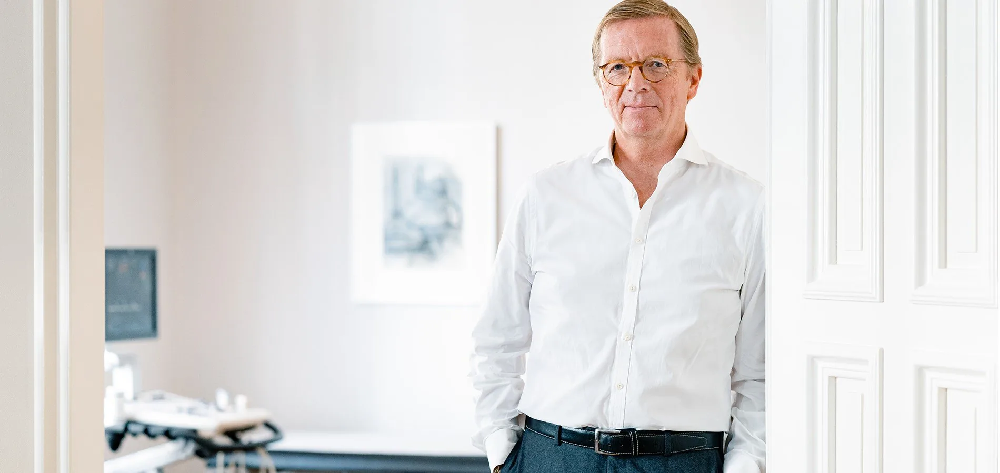

Privatärztliche Praxis · Düsseldorf-Oberkassel
In aller Ruhe. Ganz persönlich.
Kardiologie, Prävention und Naturheilverfahren in einer Praxis — und genügend Zeit für ein Gespräch, das diesen Namen verdient.

- Privatärztliche Praxis
- Kardiologie · Prävention · Naturheilverfahren
- Erfahrung aus führenden Herzzentren
- Termine nach Vereinbarung
Das Ganze betrachten. Das Beste erreichen.
Kardiovaskuläre Veränderungen haben selten nur eine Ursache. Deshalb schaue ich mir auch nicht nur eine an. Was zählt, ist die Geschichte dahinter — und dafür braucht es mehr als die üblichen zehn Minuten.
Nach Ausbildung und leitender Tätigkeit in führenden Herzzentren und Jahrzehnten in großen Praxisteams habe ich mich bewusst für die eigene Praxis entschieden. Nicht, weil die Medizin dort eine andere wäre, sondern um mich auf das Wesentliche konzentrieren zu können: auf Sie.
2012 habe ich meine Kenntnisse der Integrativen Medizin bei Prof. Dr. med. Gustav Dobos vertieft, einem der Pioniere dieses Feldes in Deutschland. Seitdem gehören beide Welten für mich zusammen.
Zwei Wege. Nicht entweder, oder.
Schulmedizin
Kardiologie und Prävention
Moderne apparative Diagnostik von der Echokardiographie bis zur telemedizinischen Messung. Nach Gespräch und Check-up entsteht ein Gesundheitsprogramm, das zu Ihrem Alltag passt — nicht zu einem Lehrbuch.
Naturheilkunde
Naturheilverfahren
Phytotherapie und ernährungsmedizinische Beratung — als Alternative oder als Ergänzung zur konventionellen Behandlung. Nicht aus Prinzip, sondern dort, wo es im Einzelfall trägt.
Der Grundsatz
Beide Verfahren werden nicht getrennt voneinander gedacht. Entschieden wird nach dem, was hilft — nicht nach dem, woher es kommt.
Was in der Praxis möglich ist.
Grundlage jeder Untersuchung bleibt das ausführliche Gespräch. Die Technik kommt danach — und nur so viel davon, wie nötig.
Raum für das Gespräch.
Es erwartet Sie eine ruhige Atmosphäre abseits der Alltagshektik. Ich begrüße Sie persönlich und nehme mir Zeit für ein ausführliches Gespräch und eine gründliche Untersuchung.
Sollte der Rat weiterer Spezialisten nötig sein, kümmere ich mich auf Wunsch persönlich um zeitnahe Termine bei Kolleginnen und Kollegen aus meinem Netzwerk.
Willkommen.
Zum Termin nach Wunsch.
Erreichbarkeit
- Telefon
- 0211 59 82 48 15
- mail@drjohns.de
- Adresse
- Sonderburgstraße 13
40545 Düsseldorf - Zeiten
- Montag bis Freitag
nach Vereinbarung
Anfahrt
- U-Bahn
- Haltestelle Belsenplatz
- Parken
- Park One
Luegallee 69, 40545 Düsseldorf
Privatärztliche Praxis. Abrechnung nach GOÄ — Privatversicherte, Beihilfeberechtigte und Selbstzahler.
Rufen Sie mich an.
Wir finden einen Termin, der Ihnen passt — und nehmen uns dann die Zeit, die nötig ist.
0211 59 82 48 15